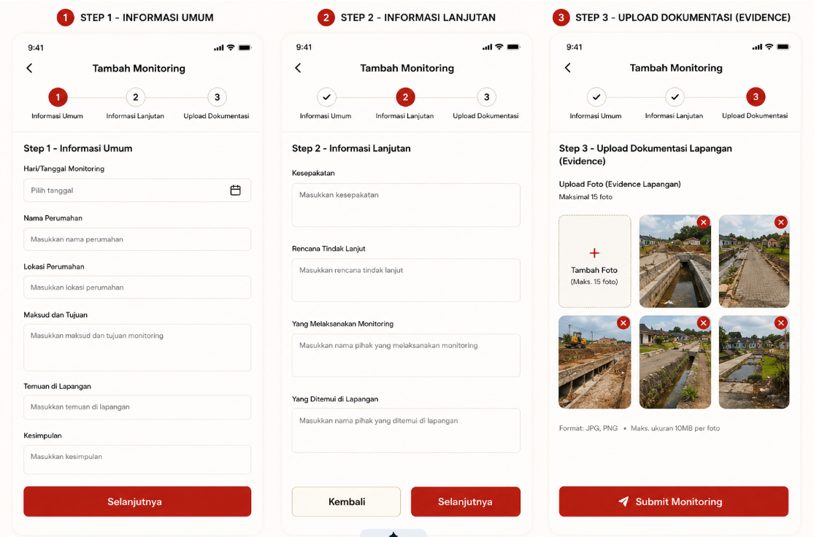
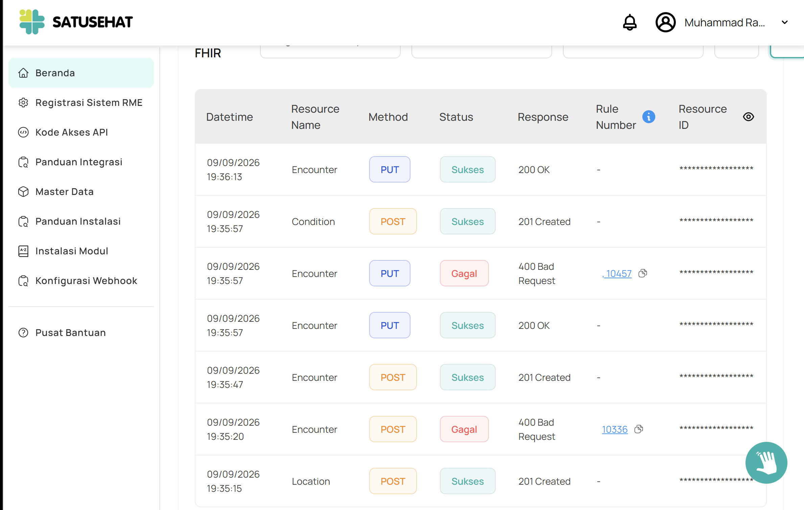
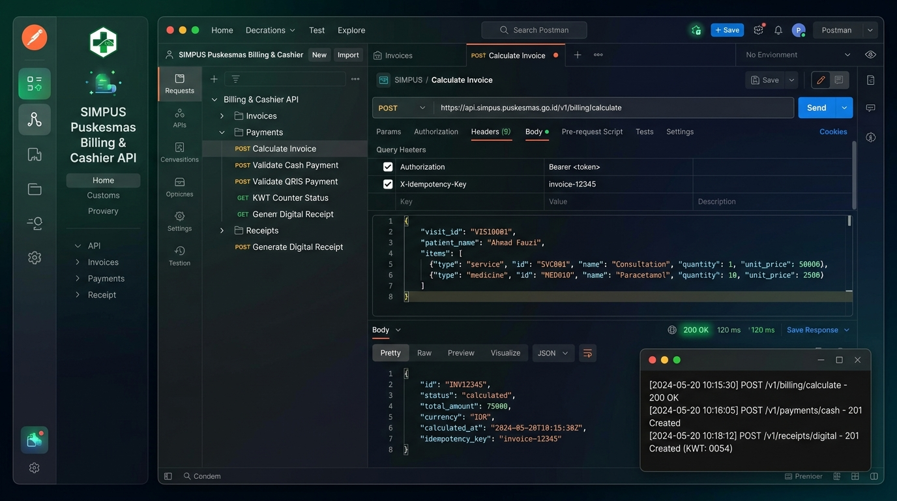
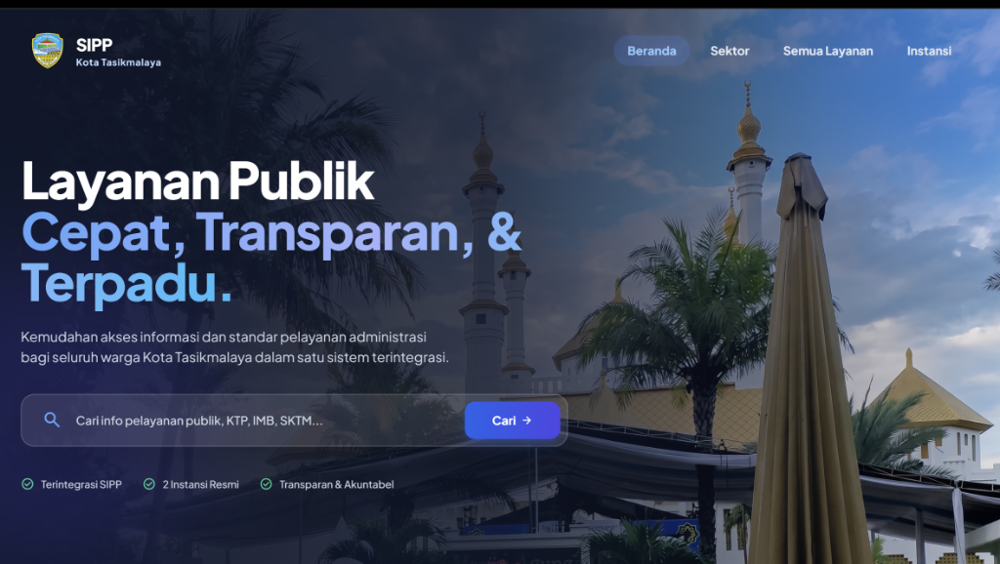
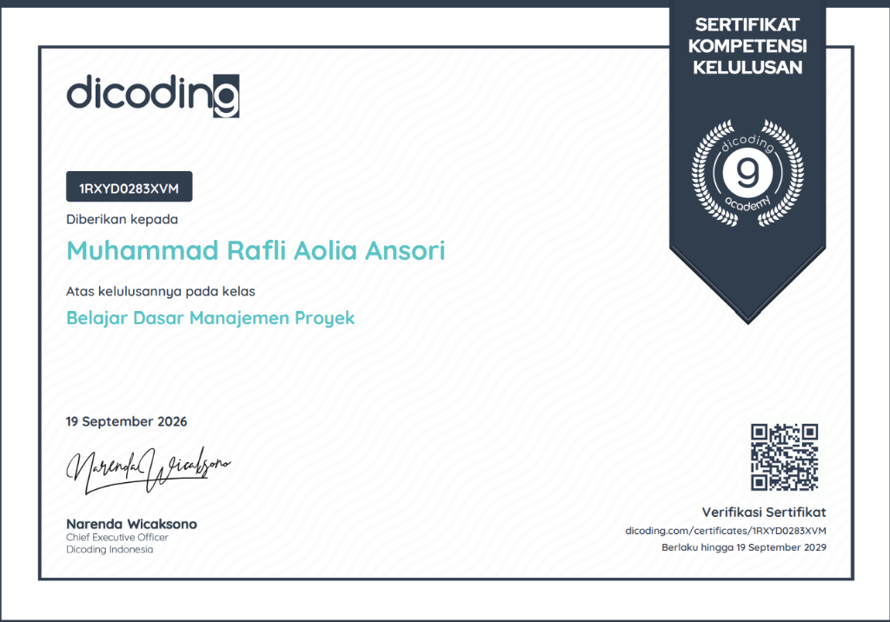

Halo! Saya Muhammad Rafli Aolia Ansori — Web Developer & Quality Assurance Engineer. Berfokus pada perancangan arsitektur web modern yang skalabel, pengujian otomatis API berstandar internasional, serta pengalaman visual interaktif tanpa cela.
Platform layanan publik terpadu untuk pengajuan dan verifikasi berkas Site Plan perumahan serta Prasarana, Sarana, dan Utilitas Umum (PSU) berbasis dual-client (Laravel 12 REST API & Flutter Mobile).

Jembatan interoperabilitas data rekam medis Puskesmas dengan platform nasional Kemenkes SATUSEHAT. Mengadopsi arsitektur HL7 FHIR R4 dengan enkripsi OAuth 2.0.

Serangkaian pengujian otomatis end-to-end API untuk modul layanan inti Puskesmas: Kasir/Invoice, Farmasi/Resep Elektronik, serta Kiosk Antrian Pasien.

Portal direktori dan katalog layanan publik Kota Tasikmalaya yang menghubungkan seluruh dinas teknis dengan masyarakat secara transparan dan responsif.

Memiliki landasan pemahaman rekayasa perangkat lunak yang kokoh dari pemrograman dasar berkinerja tinggi hingga manajemen siklus hidup proyek digital.

Mari terhubung untuk kolaborasi pengembangan arsitektur web modern, API testing berkinerja tinggi, dan solusi digital yang teruji.